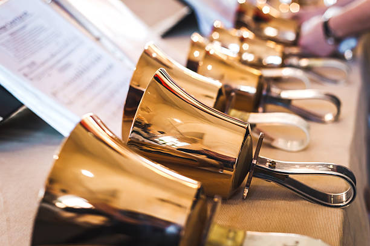
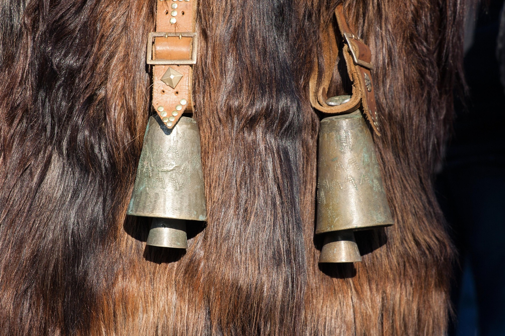

Instruments
Idiophones
Membranophones
Chordophones
Aerophones
Bells are classified as struck idiophones. They make sound by being hit by a mallet. The sound then vibrates off the body of the instrument. Some bell variants come with an internal clapper which acts as the mallet, allowing the instrument to be played simply by being shaken.

Classical Applications
Bells are typically used in pieces to add a sharp vibrating sound. This can be very distinctive so they are usually used sparingly. They can also be used in order to mimic church bells. This can be symbolism of a celebration or something sacred.

Famous Piece
Tchaikovsky's 1812 Overture is famous for ending with a wild cacophany of bells symbolizing the celebration in Moscow after Russia's defeat of Napolean and the French invasion in 1812.
Fun Fact!
The smaller the bell the more high pitched the sound will be (and vice-versa). This is why large bell towers use big bells as they not only carry further but also have a much lower tone.